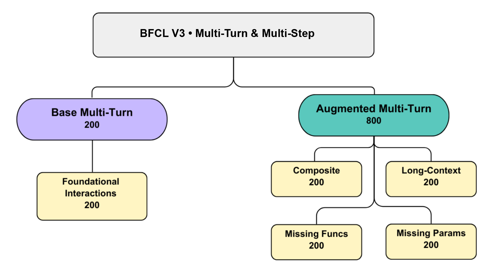

ü¶ç Gorilla: Large Language Model Connected with Massive APIs
BFCL V3: Introducing Multi-Turn & Multi-Step Function Calling
BFCL V3 • Multi-Turn & Multi-Step Function Calling Evaluation
Last updated: 2024-09-19 [Change Log]
Introduction
The Berkeley Function-Calling Leaderboard (BFCL) V3 takes a significant leap forward by introducing a new multi-turn, and multi-step function calling (tool usage) category. Only at BFCL V3 • Multi-Turn & Multi-Step, you will see a LLM stuck in a loop, listing the current directory, write a non-existing file, and list the directory again... You will ask LLM to make a social media post. LLM will force you to spell your username and password to login despite the fact that you are already browsing other people’s posts! This is only possible with multi-turn, and multi-step function calling (tool usage). Note that BFCL V3 contains the Expert Curated (Non-live) dataset introduced in BFCL V1 and User Contributed (Live) dataset introduced in BFCL V2 and the multi-turn, and multi-step category introduced in BFCL V3.
Understanding these more advanced interactions builds on the foundation of single-turn single-step function calling, where models takes an user input prompt and selects one or more functions with appropriately filled parameters from a set of provided function options, without further interaction. If you're unfamiliar with single-turn single-step function calling and the evaluation metrics we used, check out our earlier blog on single-turn single-step function calling for a deeper dive.
BFCL V3 • Multi-Turn & Multi-Step is a critical advancement in evaluating how Large Language Models (LLMs) interact with diverse
scenarios through invoking right functions.
Multi-turn function calling allows models to engage in a back-and-forth interaction with users, making it
possible for LLMs to navigate through
the complex tasks by asking clarifying questions. In contrast to multi-turn (user t0, assistant t1,
user t2, assistant t3, ..),
multi-step is where the LLM can break the response down into multiple steps (user t0, assistant t1,
assistant t2,..).
This new paradigm mimics real-world agentic behaviors where AI assistants might have to plan execution
paths, request and
extract critical information, and handle sequential function invokes to complete a task.
In addition, this is the first time BFCL performs API state verifications as the ground truth validation. In previous iterations, BFCL has been dominated by dissecting function parameter pairs using AST and matching them in a list of possible answers. In BFCL V3, we will not perform an exact match on the parameters but on the state. As long as the internal state of an API system(file system, travel booking system) stays intact, we mark them as correct.
Quick Links:
- BFCL Leaderboard: Website
- BFCL Evaluation Dataset: HuggingFace Dataset ü§ó
- Reproducibility: Github Code
- BFCL v1: Release Blog
- BFCL v2: Enterprise and OSS-contributed Live Data
In this blog, we start off by describing the difference between multi-step and multi-turn function calling and explaining why both concepts are important in the real world. We will then present the key features of our benchmarking and findings when evaluating against SOTA models. Lastly, we will showcase the evaluation dataset construction process and highlight the importance of a human annotated dataset.
What is Multi-Step & Multi-Turn?
Single-Turn
In a single-turn interaction, there is exactly one exchange between the user and the assistant. The user sends a single input, and the assistant responds with a single output.
Multi-Step
Multi-step refers to an interaction where the assistant performs several internal function calls to address a single user request. The result of one call may serve as input for subsequent calls.
Multi-Turn
Multi-turn interaction involves multiple exchanges between the user and the assistant. Each turn can contain multiple steps, allowing for more complex workflows across several interactions.
Why Multi-Turn Matters
- Handle more dynamic and realistic user interactions by processing inputs across multiple rounds of dialogue. For example, users often want to provide clarification in subsequent conversations.
- Perform complex workflows where one function’s output becomes the input for the next.
- Identify and rectify errors over multiple exchanges, making the system more robust and adaptive to ambiguity.
Existing Tooling Calling Dataset
| Dataset Name | Q - A Curation | Validation | Multi-Step | Multi-Turn | Implicit Action | Self-Correct | Irrelevancy | Long Ctx |
|---|---|---|---|---|---|---|---|---|
| BFCL-v2 | Human | Human | ✗ | ✗ | ✗ | ✗ | ✓ | ✗ |
| AgentBoard | Human | Human | ✓ | ✗ | ✗ | ✗ | ✗ | ✗ |
| œÑ-bench | Synthetic | Human | ✓ | ✓ | ✓ | ✗ | ✗ | ✗ |
| MMAU | Human | Human | ✓ | ✓ | ✗ | ✓ | ✗ | ✗ |
| Tool Sandbox | Human | Human | ✓ | ✓ | ✓ | ✓ | ✓ | ✗ |
| BFCL-v3 | Human | Human | ✓ | ✓ | ✓ | ✓ | ✓ | ✓ |
Dataset Composition
 Berkeley Function-Calling Leaderboard (BFCL V3 • Multi-Turn & Multi-Step Function Calling) Data Composition
- Base Multi-Turn (200): This category covers the foundational yet sufficiently diverse basic multi-turn interactions. In this category, we provide complete information to call each function (either through current turn question, execution result from previous turn, or initial state configuration)
-
Augmented Multi-Turn (800): This category introduce additional complexity, such as
ambiguous prompts or situations
where the model must process multiple pieces of information across turns (similar to Multihop QA),
requiring models to
handle more nuanced decision-making, disambiguation, and conditional logic across multiple turns.
-
Missing Parameters (200): This dataset challenges the model to identify required
missing information that cannot be retrieved
elsewhere in the system. In this scenario, we expect the LLM to ask for a follow-up to clarify the
misinformation.
This is distinct from certain entries in the Core Multi-Turn dataset where the question has implicit
intent that can be
answered by referencing the backend system.
-
Missing Functions (200): This scenario denotes when we expect the model to recognize
that no action
should be taken given the lack of functions provided. If the LLM raises that concern, we then supply it
with the hold-out
functions that can successfully perform user intended tasks. Note that the Core dataset and the Missing
Function dataset
essentially contains the same sequence of actions except for the latter we hold-out a subset of
functions on execution path to
further challenge the model's inference ability.
-
Long-Context Multi-Turn (200): This dataset challenges the model's resilience in long
context scenarios on function
calling. We inject random objects (e.g. hundreds of files in one directory or thousands of booking
records) to mimic real world API output,
which tend to be overtly informative. Here, we aim to test the model's ability to grasp the core
information from an overwhelmingly large context.
-
Composite (200): Composite Category seeks to combine all three scenarios above to
create an exceptionally
hard challenge that, despite being rare, is important to handle when using autonomous agents at scale.
Through this category,
we want to convince the audience that a good model performance in this category offers a strong signal
that LLMs can function as autonomous
agents at scale despite rare and extremely difficult scenarios.

Here we visualize the data statistics of the BFCL V3 Base Multi Turn dataset (the augmented categories follow similar distributions):
Data Curation Methodology
In this section, we detail our data curation methodology for the BFCL V3 • Multi-Turn & Multi-Step dataset. The dataset curation process consists of hand-curated data generation for four components of BFCL V3 • Multi-Turn & Multi-Step: API codebase creation, graph edge construction, task generation, and human-labeled ground truth multi-turn trajectories, as well as a comprehensive data validation process.
Dataset with human-in-the-loop pre-processing and post-processing
Our dataset curation process consists of 3 parts. Manual curation of APIs and mapping out upstream/downstream relations in the representation of a Graph. Data scaling through randomly sampling execution paths. Humans label ground truth and verify execution results based on initial configurations.
Our team believes that synthetic dataset by itself alone is not enough and human labeling is essential. We take care of the APIs created by humans as we believe human can generate more connected and densely important functions useful for evaluation purposes. Even with this, we went through 11 rounds of data-filtering, highlighting the importance and challenges of function calling.
1. API Codebase Creation
The foundation of the dataset begins with creating a custom API codebase inspired by common real-world APIs. These APIs span eight domains—four main APIs and four companion APIs—which represent practical use cases:
Primary Domain APIs:
- Vehicle Control:
startEngine(...),displayCarStatus(...),estimate_distance(...) - Trading Bots:
get_stock_info(...),place_order(...),get_watchlist(...) - Travel Booking:
book_flight(...),get_nearest_airport_by_city(...),purchase_insurance(...) - Gorilla File System:
ls(...),cd(...),cat(...)
Cross-functional APIs:
- Message API:
send_message(...),delete_message(...),view_messages_received(...) - Twitter API:
post_tweet(...),retweet(...),comment(...) - Ticket API:
create_ticket(...),get_ticket(...),close_ticket(...) - Math API:
logarithm(...),mean(...),standard_deviation(...)
All eight domains took inspiration from our experience with Open Functions data collection and public interest in popular agent application domains.
2. Graph Edge Construction
Graph Edge Construction
Once the API codebase is established, we construct a graph where each function represents a node. We manually map out direct edges, meaning a function's output is an input of the downstream function. This graph allows us to model cross-API behaviors, simulating realistic multi-turn function calls across different domains. Whenever we need a dataset, we sample a node on the graph, and randomly traverse through the graph to generate an execution path. Through the execution path, we are able to extrapolate the scenario that will be presented to the LLMs.
3. Task Generation
With the graph of functions in place, the next step is generating the actual data points for the dataset. This involves creating the following components:
-
Questions
We craft user queries that prompt the model to invoke a series of function calls. The questions vary in tone and style to simulate different user personas and interaction scenarios.
Precisely, we adopted the dataset from Persona Hub to generate a diverse evaluation dataset with different personas ranging from people with different occupations, age groups, etc. For example, personas can be:
- High school physics teachers
- Science historians
- Elderly hermits
Each persona would have a unique style to phrase the request.
-
Function Lists
For each query, we provide the model with a list of available functions, pulling from both the main and companion APIs.
-
Initial Configurations
These configurations are critical for setting up the state at the start of the interaction. For example, some tasks assume initial authentication has already been completed, avoiding too many repetitive actions to focus on the core multi-turn interactions.
Each data point in the dataset is mapped to a viable path in the graph. For example, if the model needs to
book a ticket, it might call both a TravelBookingAPI and a MessagingAPI to confirm
the booking.
4. Human-Labeled Ground Truth Multi-Turn Trajectories
Human labeling plays a critical role in ensuring the accuracy and reliability of the dataset. Expert human labelers manually review all data points and label the ground truth for each triplet of Question, Function List, and Initial Config. This human-in-the-loop is essential to prevent potential inaccuracies or hallucinations that can arise from synthetically generated data. Expert human labelers are tasked with coming up with ground truth trajectories for each turn based on the initial config.
Manual üßë‚Äçüíª and automatic üíª data validation steps are followed by human labeling, ensuring the ground truth's quality.
Validation Process
Validation Process for the Core Multi-Turn Dataset
The dataset undergoes several checks to ensure it is consistent, executable, and aligned with real-world multi-turn function-calling scenarios. Here's how we validate each component within the Core Multi-Turn dataset:
1. Question Validation (üßë‚Äçüíª)
Each question is reviewed to ensure it will invoke only one possible correct answer. The key checks include:
- Clarity and Specificity: Ambiguous questions are refined to provide more specific instructions.
- Complete Information: The question and previous questions up to the current turn or through exploration within the environment must contain all the necessary details for the model to invoke the correct function.
Example: A question like “Upload the document” is improved to “Upload the
<NUMBER_OF_BYTES>.pdf document.”
Example: For a question related to using the TradingBot API to retrieve a particular stock’s information, the question or the previous function calls’ execution results must specify the particular stock’s name. For instance, the question should specify that the user wants to check Nvidia’s stock; otherwise, this will not provide complete information to call the function (in multi_turn_base scenarios, which assume complete information is given in each turn).
2. Human-Labeled Ground Truth Validation (üßë‚Äçüíª+ üíª )
The human-labeled ground truth is essential for ensuring dataset reliability. Each ground truth is checked for:
- Executability: Ensuring the labeled functions can be correctly executed in sequence without errors.
- Alignment with User Request: The execution path must be reasonable and consistent with the question's intent, whether implicit or explicit.
- Brevity: The execution path should be logically concise under the premise of the previous two criteria.
Example: If the question asks for booking a flight, the ground truth should correctly call the
book_flight function without any internal errors.
Example: If the question asks for a flight reservation without providing the flight’s cost, the
implicit request is to fetch the current ticket price by calling get_flight_cost before
book_flight.
Example: If the question asks for posting a tweet and mentioning another user, only the functions
authenticate(username, password) and post_tweet(content, tags, mentions)
should be called. The function mention(tweet_id, mentioned_usernames) is unnecessary since
post_tweet can handle user mentions.
3. Initial Configuration Validation ( üíª )
The initial configuration is essential for ensuring that the model begins with the necessary context. Key validation steps include:
- Completeness: Ensuring all required information for the task is included in the initial configuration.
- Uniqueness: Ensuring all initialized information is unique and cannot be generated in later turns.
Example: Before asking the model to delete a file, the initial configuration should confirm that the file exists and provide its location.
Example: If a credit card already exists in the list, it cannot be registered again.
4. Function List Validation ( üíª )
The function list is reviewed to ensure that all related functions are available for the task at hand:
- Completeness: All necessary functions must be present in the function list, allowing the model to make appropriate calls.
Example: If the task involves sending a tweet, the function list should include the
post_tweet function to ensure the model can complete the action.
5. API Code Validation (üßë‚Äçüíª+ üíª )
To maintain the reliability of the API codebase, we leverage a combination of unit tests and automated checkers to validate each function:
- Unit Tests for Functionality: Each API function is rigorously tested using unit tests. These tests cover both individual function behavior and chainable interactions between multiple functions.
- Error Handling Tests: Functions are designed to raise appropriate error messages for issues like missing parameters or invalid input types. Unit tests validate these error conditions to ensure the function calling models receive clear, actionable feedback from the APIs in multi-turn tasks.
- Automated Format Checkers: Tools like
mypy(a static type checker) andpydocstyleare used to enforce strict compliance with type hints and docstring formatting. These automated tools check for: - Type Consistency: Ensures that each function adheres to the expected types defined by PEP484.
- Correct Formatting: Validates that all functions are documented according to the required standards, ensuring consistent subsequent function document generation.
Example: A mkdir() function is tested not only for its standalone operation but also in
conjunction with subsequent functions like ls() to validate correct chained behaviors.
Example: If the post_tweet() function is called without credentials, the function should
raise a clear error message that the model can correct based on the feedback in the subsequent steps to
correctly authenticate.
Multi-turn Model Inference and Execution
In BFCL V3 • Multi-Turn & Multi-Step, we evaluate multi-turn function-calling models through two types of models: Function-Calling (FC) models and prompting models. The distinction lies primarily in how the models generate outputs and how we handle those outputs during the inference process. This section explains the implementation behind model inference and how multi-turn interactions are managed, including the differences between various model types and the steps taken to ensure correct function execution and state-based evaluation.
1. Differences in Inference Patterns Between FC and Prompting Models
For FC models, the output is generated in JSON format, where each function call is structured with clear parameters and ready for direct execution by the API backend.
In contrast, prompting models generate outputs as function call strings. For instance, the model may output a function call in the following format:
"[write_to_file(filename='log.txt', content='hello'), close_file(filename='log.txt')]".These outputs require parsing before they can be executed. The string format is first parsed into individual function calls, and each function call is then executed in the backend as if it were a normal function-calling API.
The key distinction is that FC models produce structured, executable JSON directly, while prompting models require post-processing to interpret and extract the function calls from the string format.
2. Handling Different Multi-Turn Function Call Patterns
Multi-turn function calling can present a variety of challenges in inference, particularly when it comes to managing the flow of data and function results across multiple steps. In BFCL V3 • Multi-Turn & Multi-Step, our model handlers are designed to handle different function call patterns—simple, parallel, and nested—across multiple rounds of interaction. The distinction between these call patterns is explained in the previous section.
3. API Backend for State-Based Execution
One of the primary innovations in BFCL V3 • Multi-Turn & Multi-Step is the use of state-based evaluation. Our custom API backend ensures that the model's outputs lead to the correct changes in the system’s state. Each test case begins with an initial configuration, where API instances are initialized in a defined state. For example, a file system instance might start with a set of pre-existing files, and a messaging API might start with specific user data.
As the model interacts with the API instances across multiple turns, the backend tracks how the state evolves. Each function call alters the state, such as creating new files, changing configurations, or updating logs. At every turn, we compare the instance’s current state from executing the model function calls with the expected ground truth state from executing the ground truth function calls to determine if the sequence of function calls is correct.
If any discrepancy is detected between the model’s instance state and the expected state for the ground truth instance, the evaluation flags the issue as a failure for that turn.
4. Why We Avoid Certain Techniques (e.g. ReAct)
In BFCL V3 • Multi-Turn & Multi-Step, we deliberately avoid using techniques like prompt engineering and ReAct, which combines reasoning and acting through specific prompting methods. While ReAct and other techniques can improve models’ function calling performance in certain cases, we chose not to use it throughout the BFCL series to evaluate base LLMs with the same standards to isolate the effects from using additional optimization techniques.
Multi-turn Evaluation Metrics (State-based Evaluation)
In BFCL V3 • Multi-Turn & Multi-Step, state-based evaluation is the primary metric used to assess the performance of models in multi-turn function-calling scenarios. This approach focuses on comparing the instance’s final state after all function calls are executed at each turn of the conversation. The key idea is to track how the system's internal state changes after each step in the interaction and ensure that it aligns with the expected state trajectory.
Response-based evaluation is an alternative approach, which evaluates 1) the function calling trajectory and 2) intermediate execution response equivalence of the function calls in each turn. Previous versions, BFCL V1 and V2 • Live, used Abstract Syntax Tree (AST) and Executable categories for this method. In the following sections, we discuss the advantages of state-based evaluation and some limitations of response-based evaluation in multi-turn function calling.
Why State-based Evaluation is More Effective
State-based evaluation provides a more accurate reflection of real-world performance. In multi-turn interactions, the goal is often to update a system’s state—whether it's controlling a vehicle, managing files, or processing data. Instead of only checking if each individual function output is correct, we compare the attributes of the system’s state after every turn against the expected state. If the model successfully brings the system to the correct state at the end of each turn, it passes the evaluation.
For example, if a model is tasked with a series of actions such as:
- Create a file
- Write data to the file
- Close the file
In state-based evaluation, the system checks after each turn whether the file exists, whether the correct data was written, and whether the file is properly closed. If all the required state attributes are present and correct at each turn, the evaluation succeeds.
Response-based Evaluation and Its Limitations in Multi-Turn Evaluation
In earlier versions like BFCL V1 and V2, response-based evaluation was used. This approach evaluated the model based on the immediate function response, either by analyzing the return values or by checking the Abstract Syntax Tree (AST) structure. However, response-based evaluation faces several limitations:
- Inconsistent Trajectories: In multi-turn tasks, models may take different, equally
valid trajectories that are hard to predict or constrain via the prompt. For instance, a model might
choose to explore by listing files (e.g., using
ls) before proceeding with a specific task (e.g.,mkdir), which isn’t inherently wrong but deviates from the expected trajectory (e.g., a ground truth that only doesmkdir). - Error Recovery Scenarios: In multi-turn function calling, models may encounter errors, such as invalid input or failed execution, that require recovery actions. Response-based evaluation, which looks for trajectory equivalence or intermediate response equivalence, often marks recovery behaviors as wrong, unfairly penalizing models for exploration and correct recovery actions.
- Handling Redundant Actions: In multi-turn function calling, the model may choose to take extra steps that are not strictly necessary but still reasonable within the task context. Response-based evaluation tends to penalize models for these redundant actions, even if they do not affect the overall task outcome.
Example:
Example trajectory in multi-turn function calling that would fail in response-based evaluation but
succeed in state-based evaluation.
The question asks about purchasing Nvidia stock, and in order to do this, relevant stock information like
its current price must be retrieved. In the ground truth, the get_stock_info function is
invoked, with the stock symbol value (provided in the question) passed in. However, the model does not
know that the value in the question is indeed the stock symbol, so it tries to first retrieve the symbol
based on the company name. When it fails to do so after two attempts, it tries to get all the stock
symbols and pattern-match the correct one. Although the model took more turns (function calls) and went
through a trial-and-error process, it ultimately achieved the goal.
This example illustrates how evaluating based solely on the response is not ideal. Sometimes, the model may not have enough information to determine the shortest trajectory, and taking extra steps should not be unfairly penalized when the task is completed successfully.
Result & Error Analysis
-
Scenario 1 (Failure to perform implicit actions):
ℹ️ Context: Fuel tank has 5 gallons of gas initially. The max capacity is 50 gallons.
üßë‚Äçüíª User Prompt: Fill the fuel tank until we are able to reach Rivermist. Oil costs money so I just need to reach there, I don't need a full tank.
ü§ñ Model FC Response:fillFuelTank(fuel_amount=50)üïµÔ∏è Human-Labeled Ground Truth:displayCarStatus("fuel"),fillFuelTank(fuelAmount=44)ü§ñ Model Text Response: It seems that the fuel tank is already full or nearly full, and I can't add more fuel beyond its capacity. Would you like me to display the current fuel status?
Analysis: Knowing that we want to save money, filling the entire fuel tank does not logically make sense, and it will error out because you can't fuel beyond 50 gallons. The model failed to infer the need to check the existing fuel level before making the decision. Even though the user prompt didn’t explicitly ask for it, the model should have inferred this step.
Takeaway: LLMs still struggle with breaking down tasks and making the correct implicit calls in more complex scenarios.
-
Scenario 2 (Failure to understand the current state before performing action):
ℹ️ Context: The initial current working directory is
alex.üßë‚Äçüíª User Prompt: I am Alex. Go into the directory named after me and list all the visible and hidden contents in the current directory now, please.
ü§ñ Model FC Response:cd(folder='alex'), ls(), mkdir(dir_name='alex')üïµÔ∏è Human-Labeled Ground Truth:pwd(), ls(a=True)ü§ñ Model Text Response: I have created a directory named "alex" and navigated into it. Currently, the directory is empty, with no visible or hidden contents.
Analysis: The model did not realize it was already in the
alexdirectory and proceeded to modify the state by creating a new directory. The human-labeled ground truth correctly checks the current directory before any further action.Takeaway: Even the best LLMs sometimes fail to explore the current state before performing actions, which can be dangerous if the actions are non-reversible.
-
Scenario 3 (LLMs incur unnecessary planning and thinking):
ℹ️ Context: Twitter API has initially been authenticated.
üßë‚Äçüíª User Prompt: I would appreciate it if you could share the sorted result on social media, ensuring to tag 'current tech trend' and mention Julia, our insightful team.
ü§ñ Model FC Response:authenticate_twitter(username='your_username', password='your_password')üïµÔ∏è Human-Labeled Ground Truth:post_tweet(content='Initial report content More unsorted data Unsorted data', mention=['Julia'], tags=['current tech trend'])ü§ñ Model Text Response: It seems that I'm unable to authenticate with Twitter at the moment. Please ensure your credentials are correct or try again later.
Analysis: The LLM needlessly planned to authenticate the user even though the user prompt did not provide credentials, and authentication had already been completed.
Takeaway: Knowing that no credentials were provided, the LLM should have attempted to post the tweet first and only ask follow-up questions if authentication was required. This case highlights how LLMs can overthink and negatively influence their planning.
We hope you enjoyed this blog post. We would love to hear from you on Discord, Twitter
(#GorillaLLM), and GitHub.
If you would like to cite BFCL:
@inproceedings{berkeley-function-calling-leaderboard,
title={Berkeley Function Calling Leaderboard},
author={Fanjia Yan and Huanzhi Mao and Charlie Cheng-Jie Ji and Tianjun Zhang and Shishir G. Patil and Ion Stoica and Joseph E. Gonzalez},
year={2024},
howpublished={\url{https://gorilla.cs.berkeley.edu/blogs/8_berkeley_function_calling_leaderboard.html}},
}